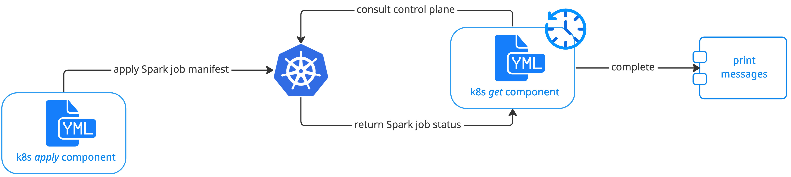
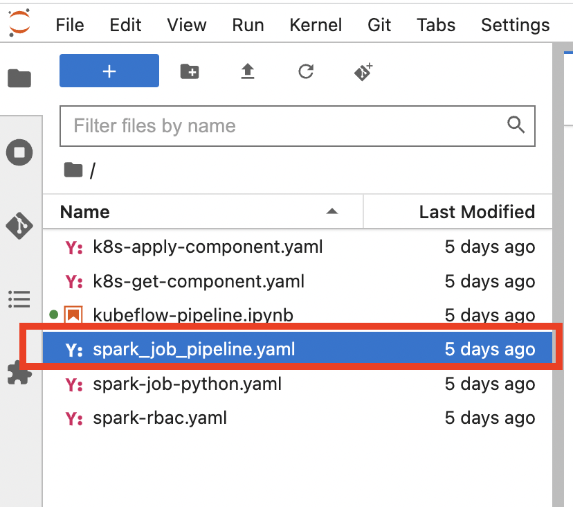
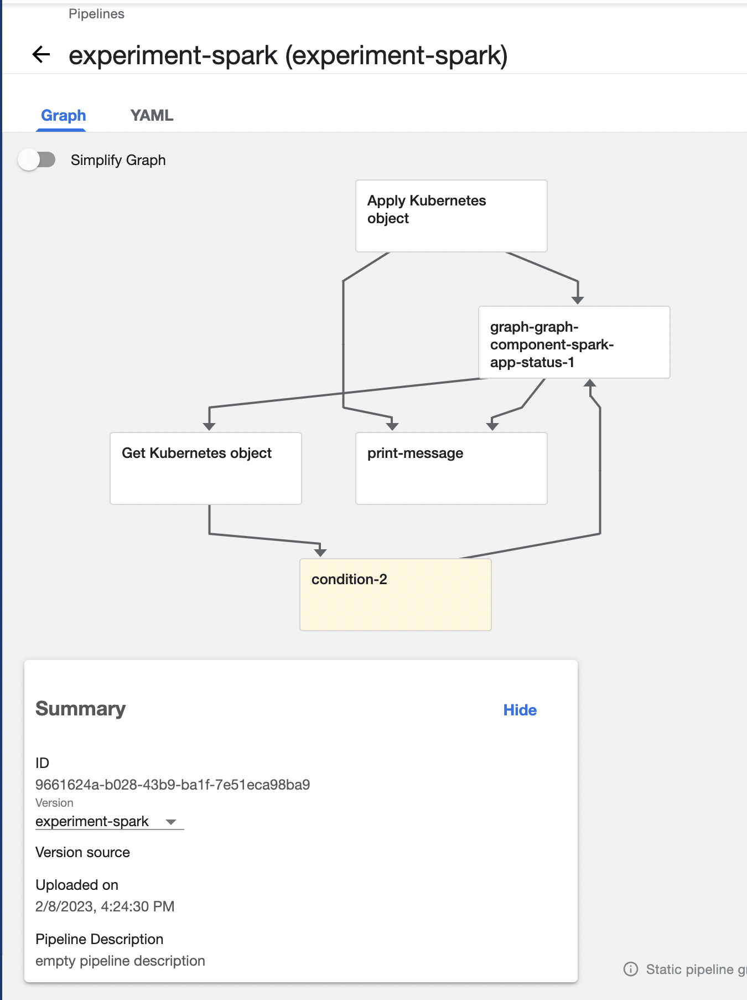
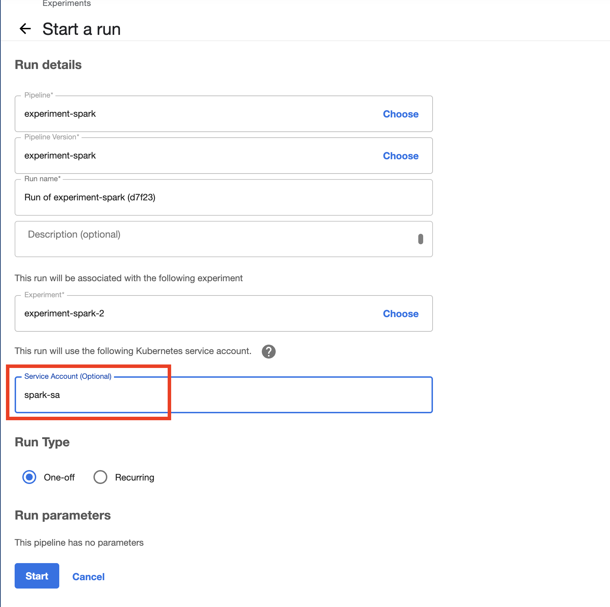
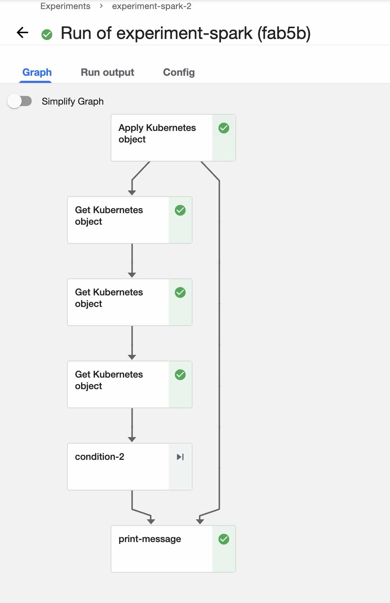

Spark¶
Overview¶
A typical Machine Learning (ML) workflow consists of three stages: preprocessing, training, and serving. During preprocessing, data cleaning and data transformations are performed. During the training stage, one or more models are trained. These models are in turn made available to the target audience in the serving stage. The data generated during serving can be fed back to the pipeline to help improve model accuracy, keep the model relevant and up-to-date as old training data might become irrelevant. The increasing amount of data available as input for ML workflows increases the need for efficient processing of data. And therefore it would be useful for us learn how to integrate Apache Spark into Kubeflow ML workflow.
Using bigger machines to process large amount of data is expensive and sometimes not possible anymore. Hence, the available solution today is distributed computing. Apache Spark is a distributed computation framework. It is used widely for data-intensive processing tasks. It is a multi-language engine for executing data engineering, data science, and machine learning on single-node machines or clusters. It supports multiple powerful features such as streaming data, SQL analytics, data science at scale and machine learning.
In this guide, we will walk you through an example to show how to integrate Spark into Kubeflow ML workflow.
Prerequisites¶
Make sure following prerequisites are fulfilled before starting this experiment:
Familiar with Kubeflow Pipelines
Install
helmCLI following official documentations
Install Spark operator¶
We start from installing Spark operator on Kubernetes cluster. In your terminal, run following commands:
helm repo add spark-operator https://googlecloudplatform.github.io/spark-on-k8s-operator
[microk8s] kubectl config view --raw > ~/.kube/config
helm install my-release spark-operator/spark-operator --namespace kubeflow
To confirm your Spark operator is on, run [microk8s] kubectl get pods -n kubeflow, and you should see pods with name such
as spark-operator-0 in “Running” status.
Create Spark Service Account and add permissions¶
In this example, we will create a service account called spark-sa to run the ML pipeline with Spark job.
First create the YAML file for the service account.
apiVersion: v1
kind: ServiceAccount
metadata:
name: spark-sa
namespace: admin
---
apiVersion: rbac.authorization.k8s.io/v1
kind: Role
metadata:
namespace: admin
name: spark-role
rules:
- apiGroups: [""]
resources: ["pods", "services", "configmaps", "pods/log"]
verbs: ["create", "get", "watch", "list", "post", "delete", "patch"]
- apiGroups: ["sparkoperator.k8s.io"]
resources: ["sparkapplications"]
verbs: ["create", "get", "watch", "list", "post", "delete", "patch"]
---
apiVersion: rbac.authorization.k8s.io/v1
kind: RoleBinding
metadata:
name: spark-role-binding
namespace: admin
subjects:
- kind: ServiceAccount
name: spark-sa
namespace: admin
roleRef:
kind: Role
name: spark-role
apiGroup: rbac.authorization.k8s.io
Note
In this example, we create the service account under admin namespace. You may change that based on your own situation
and need.
We then apply the YAML file to create the spark-sa service account using following command:
[microk8s] kubectl apply -f <create_service_account_yaml_file>
Create the pipeline with a Spark job¶
Now, it’s time to get started with concreate coding work to create a pipeline with a Spark job.
Go to the Kubeflow UI in your browser. (If you follow the guide Install Kubeflow on Nimbus, you can access Kubeflow UI by going to
http://10.64.140.43.nip.io.) Connect or start a Notebook Server, and create a .ipynb file.
Workflow Overview¶
The main challage here is to orchestrate a Spark job from Kubeflow and submit it to the cluster. We will solve this by using pipeline components for kubernetes.
We will create a k8s apply component to load the Spark job manifest file and perform kubectl apply to submit it to the
cluster. In this way, a sparkapplication resource would be created in the cluster.
We will also need to create a k8s get component to periodically poll the control plane to get the status of the Spark job. And once the job is in “COMPLETED” state, the pipeline will move to the next step.
The overall workflow of Spark job in Kubeflow pipeline is shown in below figure.

Import packages and define global variables¶
Import packages and define global variables needed for this example.
import json
import time
import yaml
import kfp.components as comp
import kfp.dsl as dsl
SPARK_COMPLETED_STATE = "COMPLETED"
SPARK_APPLICATION_KIND = "sparkapplications"
Define Spark job application¶
In this example, we will create a simple Spark job that calculates an approximate value of Pi(π). Below is the YAML file.
apiVersion: "sparkoperator.k8s.io/v1beta2"
kind: SparkApplication
metadata:
name: pyspark-pi-{epoch}
namespace: admin
spec:
type: Python
pythonVersion: "3"
mode: cluster
image: "gcr.io/spark-operator/spark-py:v3.1.1"
imagePullPolicy: Always
mainApplicationFile: local:///opt/spark/examples/src/main/python/pi.py
sparkVersion: "3.1.1"
restartPolicy:
type: OnFailure
onFailureRetries: 3
onFailureRetryInterval: 10
onSubmissionFailureRetries: 5
onSubmissionFailureRetryInterval: 20
driver:
cores: 1
coreLimit: "1200m"
memory: "512m"
labels:
version: 3.1.1
serviceAccount: spark-sa
executor:
cores: 1
instances: 1
memory: "512m"
labels:
version: 3.1.1
We then define following function to get the Spark job definition. It reads the Spark Operator job manifest file and returns the corresponding dictionary and add some randomness in the job name.
def get_spark_job_definition():
# Read manifest file
with open("<spark_job_definition_yaml_file>", "r") as stream:
spark_job_manifest = yaml.safe_load(stream)
# Add epoch time in the job name
epoch = int(time.time())
spark_job_manifest["metadata"]["name"] = spark_job_manifest["metadata"]["name"].format(epoch=epoch)
return spark_job_manifest
Apply the Spark job manifest file and create the job¶
As explained in Workflow Overview, our next step is to use k8s apply component to load the Spark job manifest file
and create the corresponding sparkapplication resource in the cluster.
Define the k8s apply component using following YAML file:
name: Apply Kubernetes object
inputs:
- {name: Object, type: JsonObject}
outputs:
- {name: Name, type: String}
- {name: Kind, type: String}
- {name: Object, type: JsonObject}
metadata:
annotations:
author: Alexey Volkov <alexey.volkov@ark-kun.com>
implementation:
container:
image: bitnami/kubectl:1.17.17
command:
- bash
- -exc
- |
object_path=$0
output_name_path=$1
output_kind_path=$2
output_object_path=$3
mkdir -p "$(dirname "$output_name_path")"
mkdir -p "$(dirname "$output_kind_path")"
mkdir -p "$(dirname "$output_object_path")"
kubectl apply -f "$object_path" --output=json > "$output_object_path"
< "$output_object_path" jq '.metadata.name' --raw-output > "$output_name_path"
< "$output_object_path" jq '.kind' --raw-output > "$output_kind_path"
- {inputPath: Object}
- {outputPath: Name}
- {outputPath: Kind}
- {outputPath: Object}
We will use this file in later Define the pipeline step.
Monitor the Spark job status¶
As mentioned in Workflow Overview, after the apply operation, the execution engine has to wait for the job to complete
before moving on to the next pipeline step. We will define a k8s get component to periodically get the application’s state
and it will iterate until the job achieves “COMPLETED” state.
The iteration would be done using recursion and the dsl.Condition instruction, and we will use @graph_component decorator
to indicate the recursive execution for the function.
The k8s get component is defined using following YAML file:
name: Get Kubernetes object
inputs:
- {name: Name, type: String}
- {name: Kind, type: String}
outputs:
- {name: Name, type: String}
- {name: ApplicationState, type: String}
- {name: Object, type: JsonObject}
metadata:
annotations:
author: Alexey Volkov <alexey.volkov@ark-kun.com>
implementation:
container:
image: bitnami/kubectl:1.17.17
command:
- bash
- -exc
- |
object_name=$0
object_type=$1
output_name_path=$2
output_state_path=$3
output_object_path=$4
mkdir -p "$(dirname "$output_name_path")"
mkdir -p "$(dirname "$output_state_path")"
mkdir -p "$(dirname "$output_object_path")"
kubectl get "$object_type" "$object_name" --output=json > "$output_object_path"
< "$output_object_path" jq '.metadata.name' --raw-output > "$output_name_path"
< "$output_object_path" jq '.status.applicationState.state' --raw-output > "$output_state_path"
- {inputValue: Name}
- {inputValue: Kind}
- {outputPath: Name}
- {outputPath: ApplicationState}
- {outputPath: Object}
Above executions are defined in following function:
@dsl.graph_component
def graph_component_spark_app_status(input_application_name):
k8s_get_op = comp.load_component_from_file("<k8s_get_component_definition_yaml_file>")
check_spark_application_status_op = k8s_get_op(
name=input_application_name,
kind=SPARK_APPLICATION_KIND
)
# Remove cache
check_spark_application_status_op.execution_options.caching_strategy.max_cache_staleness = "P0D"
time.sleep(5)
with dsl.Condition(check_spark_application_status_op.outputs["applicationstate"] != SPARK_COMPLETED_STATE):
graph_component_spark_app_status(check_spark_application_status_op.outputs["name"])
Once the Spark application is completed, the execution will carry on with other pipeline steps.
Define print messages function¶
Before defining our final pipeline, we spend some time defining following function to print messages.
def print_op(msg):
return dsl.ContainerOp(
name="Print message.",
image="alpine:3.6",
command=["echo", msg],
)
Define the pipeline¶
We can now define our final pipeline using above functions.
@dsl.pipeline(
name="Spark Operator job pipeline",
description="Spark Operator job pipeline"
)
def spark_job_pipeline():
# Load spark job manifest
spark_job_definition = get_spark_job_definition()
# Load the kubernetes apply component
k8s_apply_op = comp.load_component_from_file("<k8s_apply_component_definition_yaml_file>")
# Execute the apply command
spark_job_op = k8s_apply_op(object=json.dumps(spark_job_definition))
# Fetch spark job name
spark_job_name = spark_job_op.outputs["name"]
# Remove cache for the apply operator
spark_job_op.execution_options.caching_strategy.max_cache_staleness = "P0D"
spark_application_status_op = graph_component_spark_app_status(spark_job_op.outputs["name"])
spark_application_status_op.after(spark_job_op)
print_message = print_op(f"Job {spark_job_name} is completed.")
print_message.after(spark_application_status_op)
print_message.execution_options.caching_strategy.max_cache_staleness = "P0D"
Compile the pipeline¶
Finally, we compile the pipeline using following codes:
if __name__ == "__main__":
logging.basicConfig(level=logging.INFO)
pipeline_func = spark_job_pipeline
pipeline_filename = pipeline_func.__name__ + ".yaml"
compiler.Compiler().compile(pipeline_func, pipeline_filename)
logging.info(f"Generated pipeline file: {pipeline_filename}.")
Create, execute, and inspect the pipeline¶
Note
Details and screenshots of how to create pipelines from YAML file and how to create experiments and runs are included in Kubeflow Pipelines.
After Compile the pipeline, you should see the YAML file of your pipeline generated in the corresponding directory.

Download the YAML file. And create the pipeline using this YAML file.
The pipeline should be like following:

Create an experiment for this pipeline, and then create a run. Remember to set the Service Account as spark-sa.

Start the pipeline run, and wait for the pipeline to finish. A successful pipeline run should look like below:

Feel free to click on each pipeline step to see the component running details.